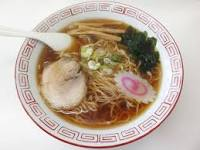

Ramen

Description
Ramen is a Japanese noodle dish. It consists of Chinese-style wheat noodles served in a meat-based broth, often
flavored with soy sauce or miso, and uses toppings such as sliced pork, nori, menma, and scallions.
Ingredients
- 3 ½ cups vegetable broth
- 1 (3.5 ounce) package ramen noodles with dried vegetables
- 2 teaspoons soy sauce
- ½ teaspoon chili oil
- ½ teaspoon minced fresh ginger root
- 1 teaspoon sesame oil
- 2 green onions, sliced
Steps
- In a medium saucepan combine broth and noodles.
- Cover and bring to a boil over high heat.
- stir to break up noodles.
- Reduce heat to medium and add soy sauce, chili oil and ginger.
- Simmer, uncovered, for 10 minutes.
- Stir in sesame oil and garnish with green onions.